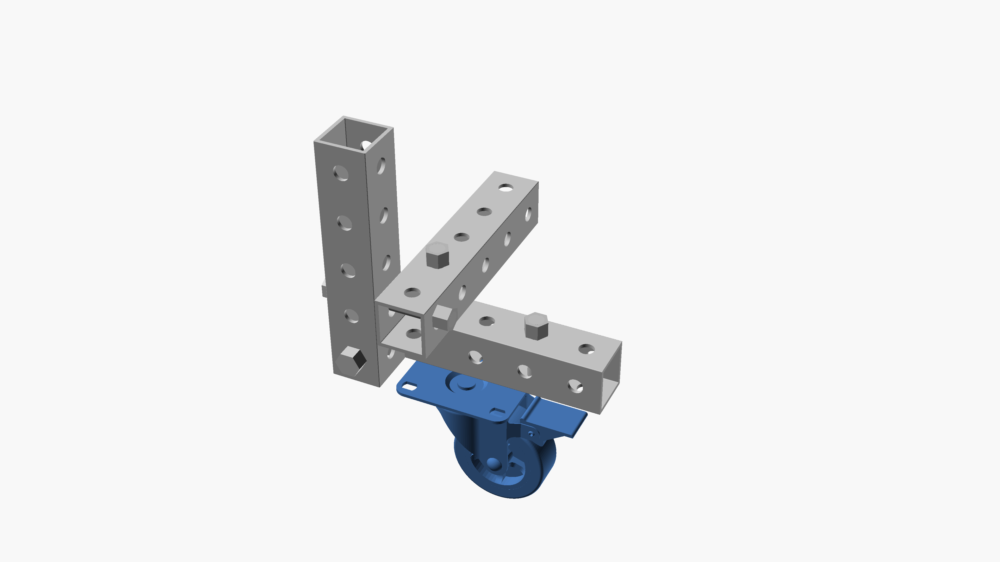

caster joints revision 4018
^ Techniques infobox ^^
| image | Caster-joint.scad.png |
| designer | |
| date | |
| parts | [[frames|Frames]], [[bolts|Bolts]], [[nuts|Nuts]], [[end_caps|End caps]], [[casters|Casters]] |
| techniques | [[bolting|Bolting]], [[tri_joints|Tri joints]], [[shelf_joints|Shelf joints]] |
| tools | [[wrenches|Wrenches]] |
Introduction
Challenges
Approaches
 Caster joints|Caster joints" loading="lazy">
Caster joints|Caster joints" loading="lazy">

Caster joints|Suboptimal caster joint" loading="lazy">